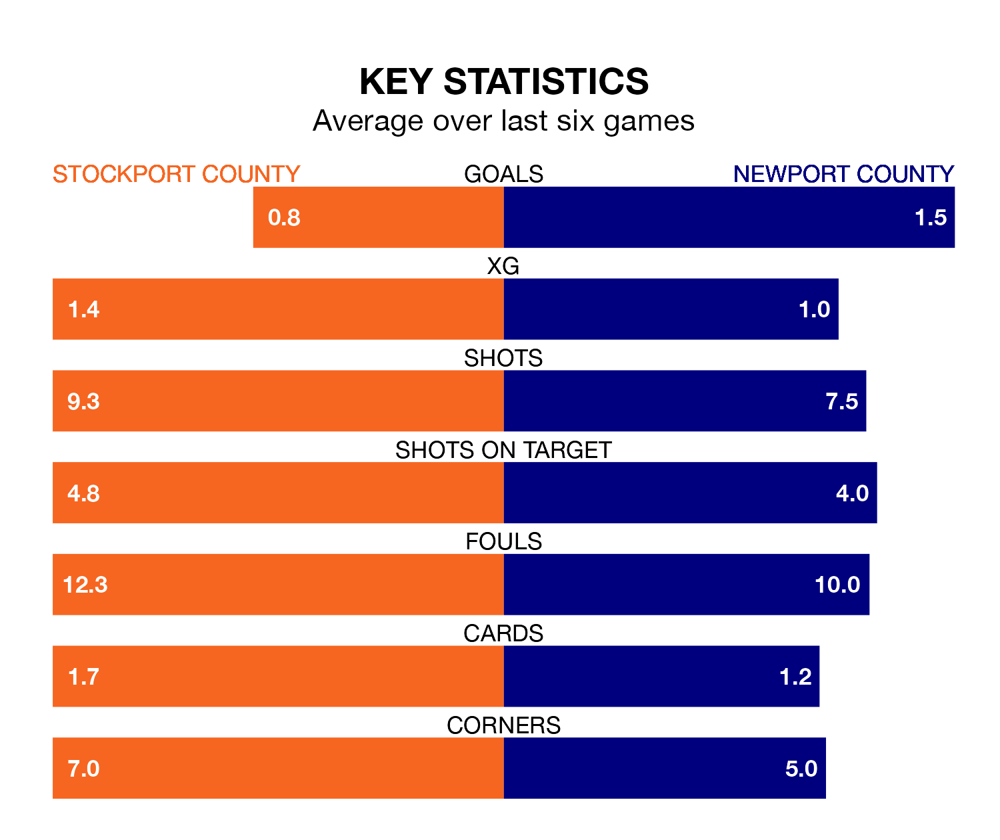

Newport County travel to Stockport County on Saturday in EFL League Two.
The visitors come into the game on the back of a defeat in their last match, having lost to Mansfield Town 1-0 at home.
The Hatters, meanwhile, drew their last match, 0-0 against Swindon Town.
With 66 goals in 34 games so far this season, Stockport are the league's third-highest scorers with 1.9 goals per game. And they are conceding fewer than average, letting in 37 goals at a rate of 1.1 per game.
Newport, meanwhile, are average scorers, with 1.5 goals per game. They have also conceded 1.5 goals per game.
Stockport County are second in the table after 34 games, of which they have won 18 and drawn nine, earning 63 points.
Newport County are 10 places behind the Hatters in 12th, with 14 wins and seven draws putting them on 49 points.
In Will Evans, the Exiles have one of the league's sharpest shooters so far this season. He has notched 20 goals in 35 appearances, to sit third in the scoring charts.
His goal rate of one every 145 minutes is slightly quicker than that of Isaac Olaofe, the home side's top scorer with a goal every 138 minutes, and a total of 17 goals in 34 games.
Stockport are in disappointing form in EFL League Two, with one win and three draws from their last six games.
With three wins and three losses over that period, the visitors' form is better – they have taken nine points from 18, compared to Stockport's six.
In the last three years, Stockport and Newport have played each other on three occasions. Stockport won two of them and Newport one.
Their last meeting was on November 25, when Newport won 2-1 at home.
Saturday's match will be refereed by Tom Reeves, who has taken charge of nine EFL League Two games so far this season, issuing one red card and booking 29 players. He has awarded three penalties.
The last Stockport game Reeves refereed was a 3-1 away win against Accrington Stanley on September 30. His last Newport match was their 2-0 win away at Gillingham on October 28.
Updated: 09:34 (UTC), 08/03/24